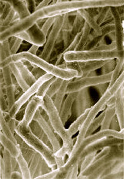

MICROBE OF THE MONTH

Trichoderma reesei
The genus Trichoderma comprises several species of filamentous fungi that have their natural habitat in
soil. Trichoderma reesei, a soft-rot ascomycete, has been used as an industrial workhorse for several
decades. The industrial attraction of T. reesei stems from its capacity to secrete high amounts of
proteins (up to 100 g/l consisting mainly of cellulase enzymes) into the cultivation medium, the ability
to grow well on commercially viable media, and the eukaryotic style of protein processing, which is of
special importance when considering the production of complex heterologous proteins in this organism.
The early pull into the development of T. reesei as an industrially exploited protein producer came from
its ability to hydrolyze cellulose to fermentable sugars for the manufacture of ethanol-based
transportation fuel.Enzymes from T. reesei are used in the pulp and paper industry(to break down
cellulose fibres, improving paper quality and reducing the need for harsh chemicals), in the textile
industry(for biopolishing, which enhances the texture and appearance of fabrics by removing small
fibres), in the food industry to improve the digestibility of animal feed and to extract valuable